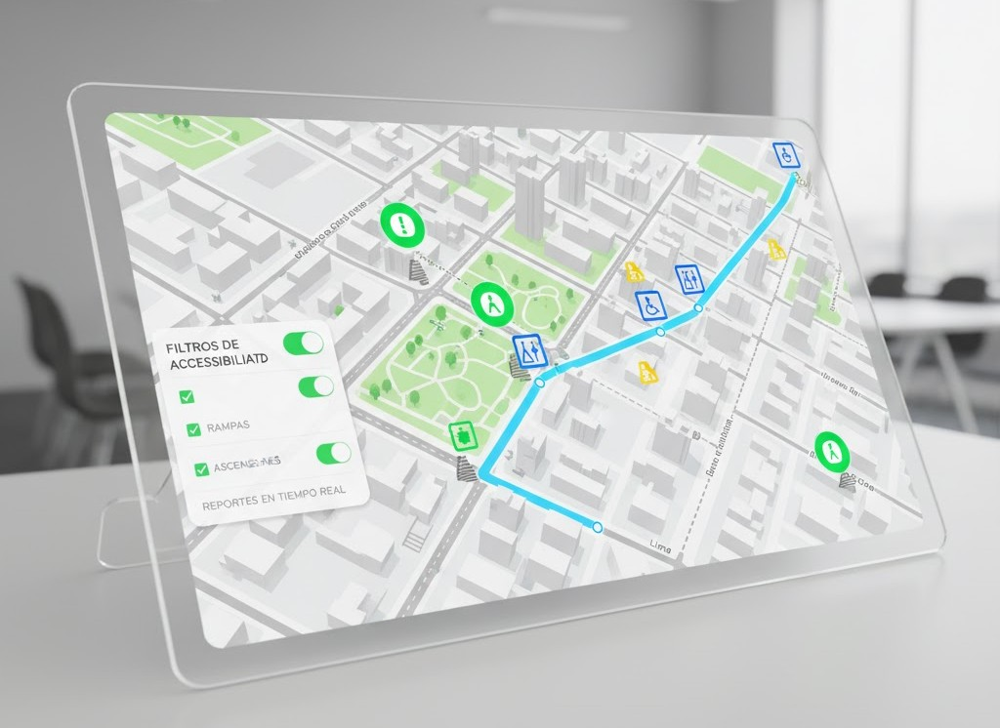
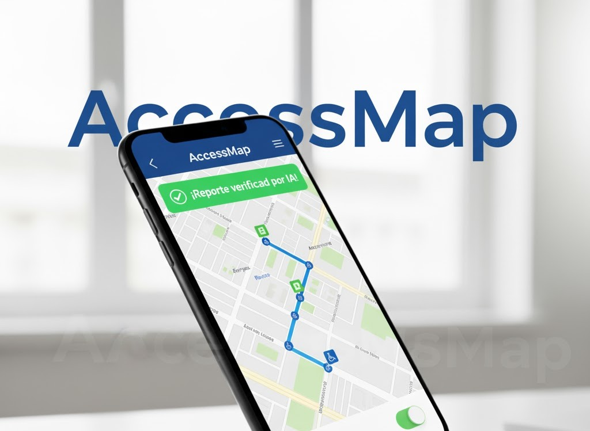

Visualiza en tiempo real rampas, ascensores y barreras
AccessMap es la plataforma colaborativa que te guía por rutas accesibles y seguras, gracias a reportes en tiempo real de una comunidad que, como tú, busca un mundo sin barreras.
8K+
Usuarios activos
10K+
Rutas verificadas
15
Distritos Conectados
Diseñamos cada función pensando en tus necesidades, para que te muevas con confianza y seguridad.

Visualiza en tiempo real rampas, ascensores y barreras
 colaborando para validar accesibilidad" />
mapa más preciso para todos.
colaborando para validar accesibilidad" />
mapa más preciso para todos.
Únete a una comunidad que comparte experiencias y actualiza

verificar los reportes de la comunidad, garantizando que laNuestra tecnología de inteligencia artificial ayuda a verificar los reportes de la comunidad, garantizando que la información sobre los obstáculos sea confiable y esté siempre actualizada.
Descubre qué está pasando en tu ciudad ahora mismo. Filtra por tipo de barrera y planifica tu ruta con información actualizada por la comunidad.